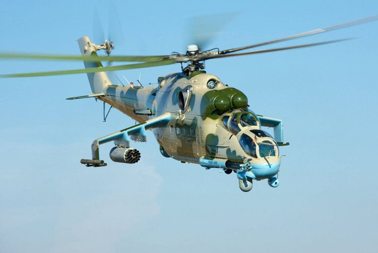
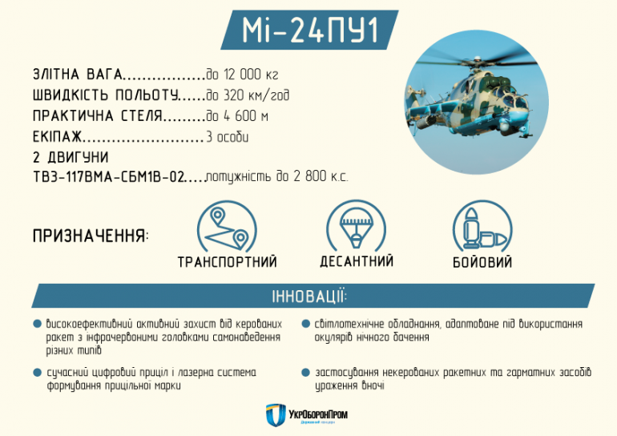

Мі-24ПУ1
У 2007 році міністерство оборони України заключило з Конотопським авіаремонтним заводом договір про розробку програми модернізації бойового вертольота Мі-24 для збройних сил України (ОКР «Helicopter»), співвиконавцями котрої стали ОАО «Мотор Січ», ГККБ «Промінь», НПФ «Адрон», ЦКБ «Арсенал», Ізюмський приладобудівний завод і французька компанія «SAGEM D.S.». Програма передбачала «двохрівневу модернізацію» вертольота із використанням агрегатів французького та українського виробництва.
28 серпня 2008 року завод представив демонстраційний зразок вертольота Мі-24П, на котрий були встановлені двигуни ТВ3-117ВМА-СБМ1У виробництва ОАО «Мотор Січ». Надалі, вертоліт був направлений на державні випробування.
У січні 2012 року за участі французької компанії «SAGEM D.S.» був виготовлений перший модернізований бойовой вертоліт Мі-24П (бортовий номер "01"), котрий був прийнятий на озброєння української армії у травні 2012 року під найменуванням Мі-24ПУ1.
25 травня 2012 року на озброєння Збройних сил України, після глибокої модернізації, було прийнято гелікоптер Мі-24ПУ1
У червні 2014 року на Конотопському авіаремонтному заводі перебували три вертольоти Мі-24ПУ1.
За офіційними даними міністерства оборони України, опублікованими у довіднику "Біла книга України", у 2014 році збройним силах передали один вертоліт Мі-24ПУ1, котрий поступив у ВВС України.
У жовтні 2016 року всі три дослідних ексземпляри були передані у війська.
26 жовтня 2021 року державне підприємство «Конотопський авіаремонтний завод «АВІАКОН», передало армійській авіації Сухопутних військ ЗСУ чергову партію відремонтованих і серійно модернізованих вертольотів Мі-24ПУ1. Це відбулося в рамках виконання державного оборонного замовлення. На вертольоти встановили модернізовані вітчизняні системи озброєння та авіаційні приціли, системи захисту від ПЗРК і двигуни з поліпшеними характеристиками. Техніку вперше оснащено м’якими паливними баками та лопатями несучого гвинта українського виробництва.
Під час модернізації Мі-24 до рівня Мі-24ПУ1 роблять капітальний ремонт і ремоторизацію вертольоту (в ході котрої встановлюють два нових, потужніших двигуна ТВ3-117ВМА-СБМ1У-02[14] виробництва «Мотор Січ»), що дозволило збільшити висоту польоту (на 1500 м) і вантажопідйомність (на 1000 кг). Ресурс нових двигунів становить 12 000 годин. Як повідомив в інтерв'ю глава департаменту розробок і закупки озброєнь і воєнної техніки міністерства оборони України Андрій Артюшенко, нові двигуни "забезпечують можливість експлуатації вертольота за температур до +52 градусів за Цельсієм".
Також встановлюють СОЕП «Адрос» КТ-01АВ, система збору і реєстрації політної інформації БУР-4-1-07, модернізований авіаційний стрілецький приціл АСП-17ВПМ-У (виробництва київського ЦКБ «Арсенал»), лазерна система формування прицільної марки ФПМ-01кв і міняють систему освітлення кабини з метою забезпечити можливість пілотування в окулярах нічного бачення (прилад нічного бачення встановлюється на шолом, тому вертоліт укомплектований шоломами нового зразка).
ПТКР «Штурм-У» заміняють на розроблений ГККБ «Промінь» 130-мм ПТКР «Бар'єр-У».
Пакет обладнання французького виробництва від SAGEM D.S. повинен був включати у себе багатофункціональний дисплей, прицільну станцію OLOSP 410, систему відео-аудіо реєстрації VS-1500, бортовий обчислювач, інерційно-супутникову систему навігації SIGMA 95L і генератор цифрової карти Mercator. У 2012 році був затверджений комплект обладнання у складі супутникової навігаційної системи GРS МАР-695, ультракороткохвильової радіостанції КY-196У, аварійного радіомаяку ЕВС-406АFНМ, а також радіолокаційного відповідача GТХ-327 з датчиком висоти АК-350.
Після завершення ремонту і модернізації вертоліт отримує нове лакофарбове покриття.
Вартість модернізації одного Мі-24П до рівня Мі-24ПУ1 станом на початок 2017 року становила 25 млн. гривень.
